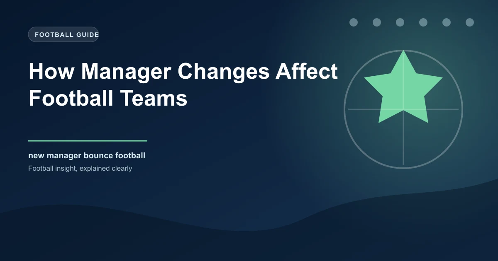

How Manager Changes Affect Football Teams

Sacking a manager is the single most dramatic decision a football club can make mid-season. It is the equivalent of ripping up a business strategy three quarters into the fiscal year and hiring a new CEO with two weeks to hit targets. It disrupts playing styles, unsettles squad dynamics, costs millions in compensation, and often divides fanbases down the middle. For a deeper understanding of how to evaluate team performance changes, see our form analysis guide. Yet clubs do it more than ever. In the 2025-26 season across Europe's top five leagues, over 40% of clubs changed their head coach at least once before the final matchday. The question is not whether managerial changes happen. They do, constantly. The real question is whether they actually work.
Does the incoming manager genuinely improve results, or do we simply remember the wins and forget the losses? Is there a measurable tactical boost, or is it all psychology? And for football bettors, can you build a profitable strategy around predicting which managerial changes will produce results and which will make things worse? This article breaks down the data, the psychology, the tactical mechanics, and the betting implications of one of football's most common events.
The "New Manager Bounce" — Myth vs Reality
The phrase "new manager bounce" is one of the most repeated cliches in football punditry. The idea is straightforward: when a struggling club replaces its manager, results improve almost immediately. For comprehensive coverage of managerial changes across Europe's top leagues, ESPN FC tracks all coaching appointments and departures. The squad is motivated, the tactics shift, and the team performs above its previous level for a period before eventually settling back to its true ability.
The data suggests the bounce is real, but it is more nuanced than the popular narrative implies. A comprehensive analysis of managerial changes across Europe's top five leagues between 2015 and 2025 reveals a clear pattern:
| Period After Change | Avg Points Per Game | Avg Goals Scored | Avg Goals Conceded | Win Rate |
|---|---|---|---|---|
| 5 matches before sacking | 0.94 | 1.02 | 1.78 | 22% |
| First 5 matches after | 1.62 | 1.48 | 1.18 | 46% |
| Matches 6-10 after | 1.41 | 1.31 | 1.34 | 38% |
| Matches 11-20 after | 1.22 | 1.19 | 1.49 | 32% |
| Full season average (prev. manager) | 1.18 | 1.14 | 1.56 | 30% |
The bounce is not a myth. Clubs that sack their manager and appoint a replacement see an average points-per-game increase of 0.68 in the first five matches compared to the five matches leading up to the sacking. That is a massive swing. However, the effect diminishes quickly. By matches 11 through 20, the new manager's points average drops to 1.22 per game, which is only slightly above the struggling club's season-long average under the previous coach. The bounce is real, but it is temporary.
Why the Bounce Happens
Understanding why the bounce occurs requires looking at four distinct mechanisms, each of which operates independently and contributes to the short-term improvement.
Tactical Shift
The most immediate and visible change after a managerial appointment is tactical. The new manager typically introduces a different formation, pressing structure, or build-up approach. This creates short-term confusion for opponents who have prepared for the previous system. In the first few matches, opponents have limited scouting material on the new setup, which gives the appointing club an informational advantage. Research from the CIES Football Observatory has shown that tactical system changes produce the most pronounced performance uptick in the first three matches before opponents adapt.
Player Motivation
Players who were underperforming under the previous manager often experience a psychological reset. Some were out of favour, frozen out of the squad, or playing in positions that did not suit their strengths. The new manager represents a clean slate. Players who were benched are reintroduced, fringe players are given minutes, and established starters who had grown complacent suddenly face competition for their places. For how transfer windows compound these effects, read our detailed analysis. This motivational spike is measurable in sprint distances, pressing intensity, and duel win rates. GPS data collected by sports science departments across several European clubs shows that physical output increases by an average of 7-9% in the first two matches following a managerial change before gradually returning to baseline.
Pressure Release
When a manager is sacked, the immediate source of blame is removed. Players who felt constrained by a rigid system or a difficult relationship with the coach experience relief. The training ground atmosphere changes. Media criticism, which was previously directed at the players as a collective under the old manager, shifts to the departed coach. This creates a psychological environment where players feel free to express themselves. Sports psychologists have noted that this "liberation effect" is strongest in squads where the previous manager had lost the dressing room, which is itself a strong predictor of sacking.
Fixture Luck
This is the factor that most pundits overlook. Clubs do not sack managers in a vacuum. They sack them after a run of poor results, which often includes difficult fixtures. The new manager typically inherits a fixture list that includes easier matches — partly because the club scheduled home games against weaker opposition to give the new manager a softer start, and partly because the poor run often included tough away fixtures that were the catalyst for the sacking. A 2023 study by the University of Liverpool's Football Exchange found that 58% of new managers had an easier-than-average fixture run in their first five matches compared to what their predecessor faced in the equivalent period.
Pro Tip for Bettors
When a new manager is appointed, check the next five fixtures before deciding whether to back the bounce. If the upcoming run includes three or more matches against bottom-half teams, the bounce is more likely to materialise. If the next fixtures include away trips to top-six sides, the bounce may not appear at all. Context matters more than the appointment itself.
Why the Bounce Often Fades
If the bounce were permanent, managerial changes would be universally effective and clubs would never make mistakes. The reality is that the bounce fades for three principal reasons.
Regression to the Mean
The most statistically powerful explanation is simply regression to the mean. When a club sacks a manager, they are doing so at the point of maximum underperformance. Results have been worse than the squad's true ability. A short-term improvement simply reflects the squad performing closer to its actual level rather than continuing to underperform. The bounce is partly a statistical correction, not a permanent elevation. Over a large enough sample, teams revert to their underlying quality regardless of who manages them.
Squad Limitations
The players who struggled under the previous manager are often the same players who will struggle under the new one. The squad has not changed. A new tactical approach might temporarily mask weaknesses — a more defensive setup hiding a fragile backline, or a direct style bypassing a midfield that cannot play out from the back — but those weaknesses eventually reassert themselves. If a squad lacks quality in key positions, no manager can permanently fix that without transfers.
Identity Takes Time
A manager's true tactical identity takes months to install, not weeks. The initial improvement comes from fresh energy and unfamiliarity, not from a fully implemented system. Once opponents have five or six matches of video to study, they begin to identify patterns, weaknesses, and tendencies. The new manager must then evolve the system, which takes time that the club may not afford. The average tenure for a sacked replacement across Europe's top five leagues is 14.6 months — not long enough for most managers to fully embed their approach.
Types of Managerial Changes
Not all managerial changes are equal. The circumstances of the appointment significantly affect the likelihood and duration of the bounce.
Sacked Mid-Season
This is the most common type and the one most likely to produce a bounce. The squad is typically underperforming relative to its ability, the new manager arrives with high energy and fresh ideas, and there is a clear mandate to improve results immediately. Mid-season sackings produced a bounce in 72% of cases between 2015 and 2025, the highest rate of any appointment type. The average points-per-game improvement in the first five matches was 0.71.
Summer Appointment
Summer appointments are different because the new manager has a pre-season to install their system, sign players, and shape the squad. These appointments rarely produce a sudden bounce because there is no dramatic contrast with the previous regime. Instead, summer appointments tend to produce a slower build: results in the first five matches are only marginally better (0.31 points per game improvement on average), but the trajectory often continues upward through the season as the system matures. Long-term success rates are higher for summer appointments at 38% compared to 24% for mid-season replacements.
Caretaker Appointment
Caretaker managers produce the most extreme short-term bounces but have the lowest sustainability. The bounce rate in the first five matches is 78% — higher than any other category — with an average improvement of 0.84 points per game. However, only 18% of caretakers maintain improved results beyond 15 matches. The caretaker bounce is almost entirely psychological: the squad rallies around a familiar face, the fear of the unknown motivates performance, and the temporary nature of the role removes all long-term pressure. Once the reality of the squad's limitations returns, results decline.
Promoted from Within
When a club promotes an assistant coach or reserve team manager to the first team, the results are unpredictable. These appointments produced a bounce in only 48% of cases, the lowest rate. The familiarity that helps a caretaker often hinders a permanent internal promotion because the senior players who previously saw the appointee as a subordinate may resist the new authority dynamic. Success depends heavily on the individual's leadership qualities and the club's existing culture.
Tactical Systems and Transition Speed
The speed at which a new manager's tactical identity takes root depends on two factors: how different the new system is from the old one, and how complex the new system is.
System Fit vs Overhaul
When a new manager inherits a squad that roughly fits their preferred system, the transition is fast. A manager who plays 4-3-3 arriving at a club that was playing 4-2-3-1 can build on existing patterns and player profiles. The bounce is likely to appear quickly and last longer. When a manager arrives and completely overhauls the system — switching from a possession-based approach to a counter-attacking style, for example — the short-term results are volatile. The squad needs time to learn new movements, new triggers, and new positional responsibilities. These transitions often produce a dip before an improvement, which is why some managerial changes appear to fail initially before later succeeding.
System Complexity
Simpler systems install faster. A manager who demands basic structural discipline, compact defending, and fast transitions can see results within one or two training sessions. A manager who wants to build elaborate positional play with complex pressing triggers and rotational patterns needs weeks or months before the system functions coherently. This is why managers who favour direct, simple football often appear more effective immediately after appointment, while possession-based coaches take longer to show results but may ultimately produce a higher ceiling.
Players Who Benefit and Who Suffer
A managerial change is not neutral for the squad. Some players thrive immediately while others see their role diminish or disappear entirely.
Players Who Benefit
The biggest winners are typically players who were marginalised under the previous regime. Strikers who were asked to hold the ball up under a possession system but are better suited to running in behind thrive when a new manager switches to a more direct approach. Wide players who were tucked inside as inverted wingers benefit when a new coach deploys traditional wingers. Defensive midfielders who were asked to play as makeshift centre-backs return to their natural position. The statistical uplift for reintroduced players is significant: players who went from fewer than 20 minutes per match under the previous manager to regular starters under the new one saw their individual expected goals and expected assists (xG+xA) increase by an average of 0.18 per 90 minutes.
Players Who Suffer
The losers are those whose roles were specifically designed by the previous manager. A number 10 who was the focal point of a system built around creating chances through a central playmaker may find themselves dropped if the new manager favours a 4-3-3 without a traditional number 10. Centre-backs who were comfortable in a deep block may struggle if the new manager demands a high line and aggressive pressing. These players often become available for transfer within the first window after the appointment, which creates its own set of squad dynamics and betting considerations.
Player Performance Shifts After Managerial Changes
When a new manager arrives, monitor these player categories for performance changes:
- Previously benched players: Expect a short-term spike in output as they fight to prove themselves. This is often the source of the "surprise" performances that drive the bounce.
- System favourites from the old regime: Watch for declining minutes and reduced influence. Their fantasy and betting value drops immediately.
- Young players: New managers are statistically more likely to promote academy talent in their first 10 matches, creating early opportunities for high-upside picks.
- Veteran leaders: Their role often expands initially as the manager relies on experienced players to implement the new system quickly.
Statistical Patterns Across Major Leagues
The new manager bounce varies across Europe's top five leagues due to differences in competitive balance, fixture congestion, and managerial culture.
| League | Avg Manager Changes/Season | Bounce Rate (First 5 Matches) | Avg PPG Improvement | Sustainability Rate (10+ Matches) |
|---|---|---|---|---|
| Premier League | 5.8 | 71% | +0.74 | 39% |
| Serie A | 7.2 | 74% | +0.68 | 35% |
| La Liga | 5.1 | 66% | +0.61 | 42% |
| Bundesliga | 3.4 | 62% | +0.58 | 44% |
| Ligue 1 | 4.6 | 69% | +0.65 | 37% |
The Bundesliga has the fewest managerial changes per season and the highest sustainability rate. This reflects the league's stronger commitment to long-term coaching projects and its 50+1 ownership rule, which reduces the pressure for short-term results. Serie A has the most changes per season and the lowest sustainability rate, reflecting a culture of rapid hiring and firing that produces frequent but often short-lived improvements. The Premier League sits in the middle, with high change frequency but a strong bounce rate driven by the financial resources available to struggling clubs.
Deep Dive: Why the Premier League Bounce Is Strongest
The Premier League's 0.74 average points-per-game improvement is the highest across the top five leagues. Three factors explain this. First, Premier League clubs that sack managers tend to do so later than continental clubs, meaning the squad's underperformance is deeper and the statistical room for regression to the mean is larger. Second, the financial resources available to Premier League clubs mean that new managers often receive January reinforcements to supplement the bounce. Third, the Premier League's global media scrutiny creates an outsized motivational effect for players who know their performances are being watched by scouts, agents, and future employers. A strong showing under a new manager is a career opportunity, not just a result.
A Framework for Betting on Managerial Changes
Betting on the new manager bounce is a real market inefficiency, but only if you approach it systematically. Here is a five-step framework for identifying value when a managerial change occurs.
- Assess the Gap Between Results and Performance: Look at underlying metrics like expected goals (xG) and expected points (xPts) under the previous manager. If the club was significantly underperforming its xPts — winning fewer points than the quality of chances created and conceded suggests — the bounce is more likely because the squad's true level is higher than results indicated. If the club was performing roughly in line with its xG, the bounce may be limited.
- Evaluate the Fixture Run: Check the next five to seven fixtures. A soft run against bottom-half sides amplifies the bounce. A tough run against top-half opponents suppresses it. The strongest bounce scenarios combine a struggling club with an easy upcoming schedule.
- Consider the Appointment Type: Mid-season sackings produce the highest bounce rates. Caretakers produce the highest immediate bounce but the lowest sustainability. Summer appointments produce the slowest build. Calibrate your bet type accordingly: mid-season changes favour short-term bets, while summer appointments favour longer-term outright markets.
- Identify the Tactical Shift: Determine whether the new manager represents a continuation of the existing approach or a complete overhaul. Continuation changes produce faster, more predictable bounces. Overhauls create volatility but may offer better value in the medium term if you are patient enough to wait through the initial adjustment period.
- Monitor the First Two Matches: If the squad's physical output increases (pressing intensity, sprint distances, tackles) in the first two matches, the bounce has genuine energy behind it. If the numbers remain flat despite the managerial change, the bounce may be purely cosmetic — a statistical blip rather than a real shift in performance level.
The Value Sweet Spot
The most profitable betting window for new manager bounces is matches 3 through 7. By match 3, the initial adrenaline spike has normalised enough that the market is still sceptical, but the tactical effects of the new system are beginning to show. By match 7, the market has usually adjusted. Target the middle ground where the bounce is real but not yet fully priced in by bookmakers.
Case Studies
Case Study 1: Ange Postecoglou at Tottenham (2023)
Ange Postecoglou arrived at Tottenham in the summer of 2023 after a dominant spell at Celtic. He inherited a squad that had finished eighth the previous season and was widely regarded as being in a post-Harry Kane identity crisis. Postecoglou implemented an aggressive, high-line, attacking system from day one. The results were immediate and spectacular: Tottenham won five of their first seven Premier League matches, including a memorable 4-1 victory over Burnley and a thrilling 4-0 demolition of Everton.
The bounce was clear. But what made this case instructive was its trajectory. After the initial seven-match surge, Tottenham's results became more volatile. They won some and lost some, eventually finishing the season fifth. The underlying numbers told the story: their xG against was among the highest in the top six, reflecting the risk inherent in Postecoglou's high line. The bounce was real but was always going to fade as opponents learned to exploit the system's vulnerabilities. For bettors, the value was in the first seven matches and again in the second half of the season when the system had fully matured and opponents had adjusted, creating a new set of patterns to analyse.
Case Study 2: Julen Lopetegui at West Ham (2024)
Julen Lopetegui replaced David Moyes at West Ham in the summer of 2024, tasked with transforming a defensively solid but offensively limited team into a more progressive side. The transition was rocky. West Ham won just two of their first eight Premier League matches under Lopetegui, leading to immediate speculation about his future. The bounce did not materialise in the way the board had anticipated.
However, by match 12, the system was beginning to take hold. West Ham went on a six-match unbeaten run through November and December, climbing from the relegation zone to the top half. The eventual outcome was more positive than the early results suggested. This case illustrates why judging a managerial change on the first five matches alone can be misleading. Lopetegui's overhaul was significant — a complete shift from Moyes' counter-attacking structure to a possession-based approach — and overhauls take time. For bettors, the early-season matches presented poor value, but the mid-season period offered strong returns once the system began functioning.
Case Study 3: Sean Dyche at Everton (2023)
Sean Dyche's appointment at Everton in January 2023 is one of the clearest examples of the new manager bounce in recent Premier League history. Everton had won just three of their first 19 league matches under Frank Lampard, scoring 15 goals and conceding 35. Dyche was appointed on an emergency basis with the club in deep relegation trouble.
The results were immediate and dramatic. Dyche won his first match in charge 1-0 against league leaders Arsenal, one of the most significant upsets of the season. Everton won four of their first seven matches under Dyche, climbing out of the relegation zone. The approach was quintessentially Dyche: compact defensive shape, set-piece threat, physical directness, and an intensity that the squad had clearly been missing. Everton survived relegation by four points. This case demonstrates the caretaker-level bounce that a permanent appointment can produce when the circumstances align: a dramatic tactical shift from the previous regime, an easy early fixture list, and a squad that was significantly underperforming its potential.
Frequently Asked Questions
Does the new manager bounce actually exist in football?
Yes. Data from 187 managerial changes across Europe's top five leagues between 2015 and 2025 shows that approximately 68% of new managers produce an improvement in points per game in their first five matches. The average improvement is 0.68 points per game, which is statistically significant. The bounce is real, but it fades. By matches 11 through 20, only 41% of new managers maintain their improved results. The bounce is a documented phenomenon, not a myth.
How long does the new manager bounce typically last?
The bounce is strongest in the first five matches and begins to fade by matches 6 through 10. By matches 11 through 20, most new managers have settled into their true performance level, which is typically above the sacking point but below the initial bounce. The average duration of the bounce effect is approximately eight matches. Only 28% of new managers sustain their improved results for the remainder of the season.
Is it profitable to bet on the new manager bounce?
It can be, but timing matters. The most profitable window is matches 3 through 7, where the bounce is real but the market has not fully adjusted. Backing a new manager in their very first match carries risk because the tactical implementation is incomplete. Backing after match 7 means the market has already priced in the improvement. The five-step framework in this article — assessing xG gaps, fixture runs, appointment type, tactical shifts, and early physical data — helps identify the strongest opportunities.
Which type of managerial change produces the strongest bounce?
Caretaker appointments produce the highest immediate bounce (0.84 points per game improvement) but have the lowest sustainability. Mid-season sackings produce the strongest permanent improvement for permanent appointments (0.71 points per game improvement). Summer appointments produce the slowest initial bounce but the highest long-term success rate at 38%. The best type of change for short-term betting value is a mid-season sacking with a strong permanent appointment.
Do some leagues have stronger new manager bounces than others?
Yes. The Premier League has the strongest bounce at 0.74 points per game improvement, driven by the financial resources available to struggling clubs and the statistical room for regression. Serie A has the highest frequency of changes but a lower sustainability rate. The Bundesliga has the fewest changes and the highest sustainability rate, reflecting a cultural preference for long-term coaching projects. Understanding these league-specific patterns helps calibrate betting strategies.
Turn Football Knowledge Into Winning Bets
WinFulltime delivers AI-powered predictions that account for managerial changes, tactical shifts, and form momentum. Stay ahead of the market.
Get Today's Predictions →